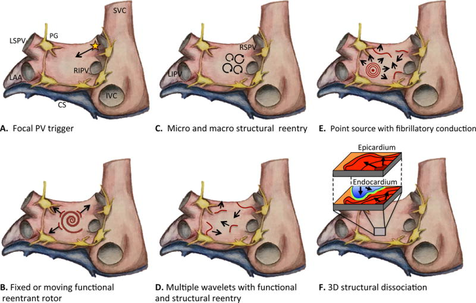
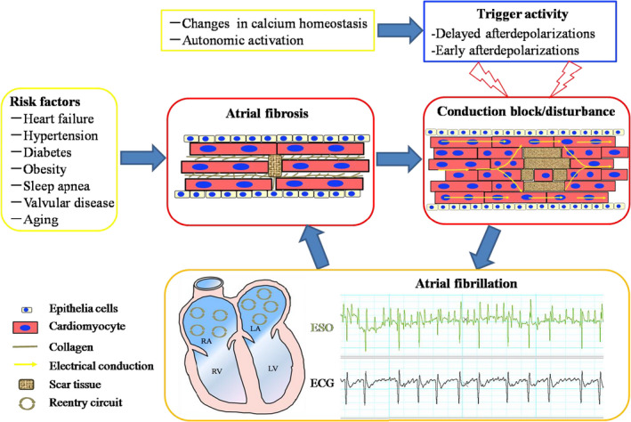
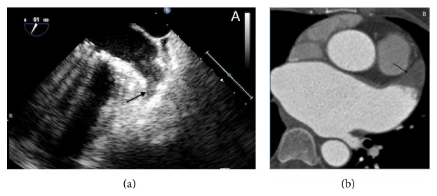
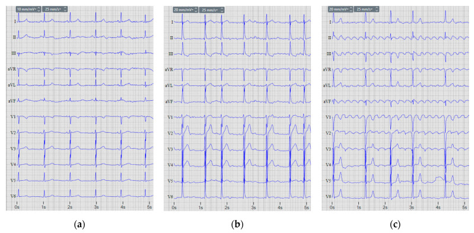
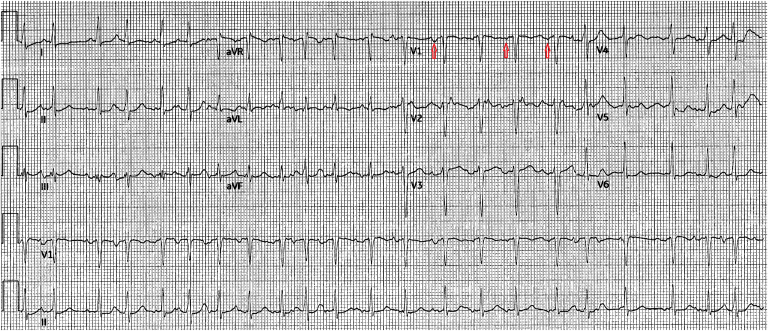

定義與定位
這個病是什麼？在分類樹的哪個位置？跟隔壁的病靠什麼分開？
| 項目 | 重點 |
|---|---|
| 本質 | 心房電活動完全紊亂、失去有效機械收縮；房室結不規則地放行下傳，造成不規則心室率 |
| 分類位置 | 心室上頻脈（SVT, supraventricular tachycardia）的一種，與心房撲動、多源性心房頻脈（MAT）、AVNRT／AVRT 並列 |
| 流行病學 | 臨床上最常見的持續性心律不整；盛行率隨年齡陡升（80 歲以上約 10%）；40 歲時的終生風險約四分之一（經典 Framingham） |
| 為什麼要治 | 中風風險增加約 5 倍，且可歸因比例隨年齡陡升；AF 造成的中風梗塞範圍較大、預後較差 |
傳統分類：看的是「時間」與「決定」
| 型別 | 定義 |
|---|---|
| 首次診斷 | 第一次被記錄到，不論持續多久、有無症狀 |
| 發作型（paroxysmal） | ≤7 天內自行終止，或在 7 天內被介入終止 |
| 持續型（persistent） | 持續 ＞7 天（含需要轉律才停的） |
| 長期持續型（long-standing persistent） | 持續 ＞12 個月，但仍打算恢復竇性節律 |
| 永久型（permanent） | 醫病共同決定不再嘗試節律控制 |
病因與機制
為什麼會發生？病生理鏈條長什麼樣？——這一節寫好，下面的「臨床表現」就不用背。
危險因子
| 類別 | 內容 |
|---|---|
| 不可逆 | 高齡（最強）、男性、家族史 |
| 可矯正（指引現在最強調的一塊） | 高血壓、肥胖、睡眠呼吸中止、飲酒、抽菸、缺乏運動、糖尿病 |
| 心臟本身 | 心衰竭（見 Heart failure）、瓣膜性心臟病（尤其 Mitral stenosis↗）、冠心病（見 CAD）、心肌症（見 HCM）、先天性心臟病 |
| 心臟以外 | 甲狀腺亢進（見 Hyperthyroidism↗）、慢性腎病、慢性肺病、敗血症、電解質異常 |
| 急性誘因 | 心臟手術後（隨手術別約 30–50%，好發於術後第 2–4 天）、急性感染、肺栓塞、大量飲酒（holiday heart syndrome） |

AF 的 trigger–substrate 概念：A 的星號是肺靜脈心肌袖異位放電；B–F 顯示 rotor、多重 wavelet、結構性折返與三維傳導解離等維持機制。Source: Staerk et al., Circ Res 2017, Figure 1。
共病與老化促成心房纖維化、傳導阻滯與折返基質；trigger 啟動後，這個 substrate 讓 AF 得以持續，形成「AF begets AF」的重塑循環。Source: Zhang et al., J Cell Mol Med 2021, Figure 1（CC BY 4.0）。
左心耳血栓：TEE（左）與心臟 CT（右）的箭頭指向同一類充盈缺損。AF 的血流鬱滯最常在左心耳形成血栓，這也是 TEE 在 cardioversion 前最重要的搜尋目標。Source: Beigel et al., Biomed Res Int 2015, Figure 4（CC BY 3.0）。臨床表現
典型病人長什麼樣？哪些症狀是幾乎一定有、哪些是提示性的？
- 典型：心悸（不規則的「亂跳」感）、運動耐受度下降、疲倦、呼吸困難（見 Dyspnea、Chest pain↗）
- 理學檢查：脈搏絕對不規則且強弱不等；脈搏短絀（pulse deficit）——心尖聽診的心率大於橈動脈可摸到的脈搏數，因為部分心跳太弱、來不及充填就射不出去（見 Cardiac auscultation）；S1 強弱不定、頸靜脈波形上沒有 a 波
- 提示性：新發的心衰竭惡化、原本控制良好的病人突然喘起來——心房收縮貢獻約 20–30% 的心輸出量，在舒張功能差的心（HCM、Mitral stenosis↗、老年高血壓心）失去它就立刻失代償
- 少見但重要：以中風為第一表現（完全無症狀的 AF 不少）；以心衰竭為第一表現的心搏過速性心肌症；血行動力不穩定的快速心室反應（見 Shock）
診斷
診斷標準是什麼？要開哪些檢查？哪個是 gold standard？
| 診斷條件 | 內容 |
|---|---|
| 確診工具 | 12 導程心電圖，或至少 30 秒的單導程節律紀錄符合 AF 型態 |
| 心電圖三要件 | ① RR 間期絕對不規則（irregularly irregular）② 沒有可辨識的 P 波 ③ 代之以雜亂的 f 波（顫動波），心房速率約 350–600／分 |
| QRS 型態 | 通常窄；寬 QRS 要想到束支傳導阻滯、差異性傳導（aberrancy），或旁路（WPW, Wolff–Parkinson–White） |
| 未治療的心室率 | 常在 100–160／分（取決於房室結傳導能力與自律神經張力） |
要開的檢查：ECG↗（確診）、24 小時 Holter／事件記錄器／植入式監測（抓發作型）、Echocardiography（TTE：左心房大小、瓣膜、EF、左心室肥厚——決定能不能用 DOAC（direct oral anticoagulant，直接口服抗凝劑） 的瓣膜評估在這裡做）、經食道超音波 TEE（轉律前排除左心房／左心耳血栓）、抽血 TSH、電解質、腎功能（決定抗凝劑量）、CBC

12 導程並排：左為竇律；中為 AF（沒有一致 P 波、RR irregularly irregular）；右為 atrial flutter（規則鋸齒狀 F 波，尤其下壁導程清楚）。Source: Petrenas et al., Sensors 2022, Figure 1（CC BY 4.0）。
MAT：節律不規則，但仍找得到離散 P 波；紅箭頭示至少三種 P 波形態，且 PR 間期不一。這是與 AF「完全沒有一致 P 波」最實用的分界。Source: Vargas et al., Cureus 2023, Figure 1（CC BY 4.0）。鑑別診斷
要跟誰分清楚？靠什麼分？
| 要排除的 | 支持它的線索 | 怎麼排除 |
|---|---|---|
| 心房撲動（AFL） | 心室率規則（2:1 下傳時約 150／分）；下壁導程鋸齒狀 F 波；心房速率 250–350／分（典型約 300） | 頸動脈竇按摩或腺苷加強房室結阻滯，把被 QRS 蓋住的 F 波露出來（診斷用，不會終止它） |
| 多源性心房頻脈（MAT） | 心室率也不規則，但看得到 P 波，且**≥3 種形態**、PR 間期各異；心房速率 ＞100／分；慢性肺病病人最典型 | 放大看 P 波形態。治療是治肺病本身，不是給抗心律不整藥 |
| AVNRT／AVRT | 快而規則的窄 QRS 頻脈；P 波藏在 QRS 裡（V1 假 R′、II 假 S 波）；常見於年輕人、無結構性心臟病 | 迷走手法或腺苷會直接終止它——這一點就足以分開 |
| 竇性頻脈 | 規則、P 波形態正常；有明確誘因（發燒、貧血、疼痛、脫水、甲狀腺亢進） | 迷走手法後暫時減慢又回升；治誘因 |
| 頻繁心房早期收縮 | 不規則，但仔細看每一跳都有 P 波，只是提早 | 心電圖逐跳判讀 |
| Ventricular tachycardia（多形性）／WPW 合併 AF | 寬 QRS 的不規則快速心律 | 極快＋寬＋不規則（FBI）先當 WPW 處理；絕不給房室結阻斷劑 |
治療
第一線是什麼？什麼情況升級？
第一步永遠是血行動力
| 情境 | 處置 |
|---|---|
| 不穩定（低血壓、休克、意識改變、缺血性胸痛、急性肺水腫） | 立即同步電擊轉律——不等抗凝、不等 TEE、不等分數；同時盡快開始抗凝 |
| 穩定 | 選率控或節律控（見下），並獨立評估抗凝 |
率控 vs 節律控：怎麼選
| 傾向率控 | 傾向節律控 |
|---|---|
| 高齡、症狀輕微或無症狀 | 症狀明顯、影響生活品質 |
| 長期持續型、左心房已嚴重擴大 | 診斷未滿一年的「早期」AF、第一次發作、年輕 |
| 多重共病、抗心律不整藥風險高 | 心搏過速性心肌症（恢復竇性節律可望逆轉） |
| 節律控制已反覆失敗 | HFrEF（節律控制可改善預後） |
率控：藥物怎麼挑（共病決定首選）
| 病人狀況 | 首選 | 為什麼 |
|---|---|---|
| 一般（無心衰竭、無氣道疾病） | Beta blocker↗ 或非二氫吡啶類 CCB（calcium channel blocker）（diltiazem、verapamil） | 兩者都直接壓房室結傳導 |
| COPD 急性惡化／氣喘 | 靜脈 diltiazem 或 verapamil；非用 β-blocker 不可時，只能選心臟選擇性的 metoprolol／bisoprolol／esmolol | 非選擇性 β-blocker 會阻斷支氣管 β₂ 受體而誘發支氣管痙攣 |
| HFrEF（EF 明顯下降）／低血壓 | digoxin 或 amiodarone | 非二氫吡啶類 CCB 是負性肌力藥，在 HFrEF 反而變成禁忌；digoxin 只控制休息心率、起效慢，對運動時心率控制差 |
| 藥物完全無效 | 房室結消融 ＋ 節律器 | 最後手段 |
節律控制：藥物與消融
| 病人心臟狀況 | 可用的抗心律不整藥 | 禁忌 |
|---|---|---|
| 無結構性心臟病 | flecainide、propafenone（Class IC）、dronedarone、sotalol | — |
| 冠心病或結構性心臟病 | sotalol、dofetilide、amiodarone | Class IC 禁用（CAST 試驗：缺血心肌用了死亡率上升） |
| HFrEF | amiodarone、dofetilide | Class IC 禁用；dronedarone 禁用於 NYHA III–IV 或近期失代償（ANDROMEDA）與永久型 AF（PALLAS） |
- 導管消融（肺靜脈隔離 PVI）：症狀性 AF 且藥物無效者的標準治療；在年輕、共病少的發作型 AF 與 HFrEF 已升為第一線
- 口袋藥（pill-in-the-pocket）：flecainide 或 propafenone 單次口服，只限無結構性心臟病、且需併用房室結阻斷劑——否則 AF 可能轉成心房撲動再以 1:1 下傳，心室率反而更快
- amiodarone 轉律與維持效果最好，但長期毒性最多（甲狀腺、肺纖維化、肝、皮膚、角膜沉積），且是強效 P-gp 抑制劑，會拉高 DOAC 濃度（見 DOAC）
抗凝（一）：要不要長期吃 —— CHA₂DS₂-VASc
- 計分：C 心衰竭／左心室功能不良 1｜H 高血壓 1｜A 年齡 ≥75 → 2｜D 糖尿病 1｜S 中風／TIA／血栓栓塞史 → 2｜V 血管疾病（心肌梗塞、周邊動脈疾病、主動脈斑塊）1｜A 年齡 65–74 → 1｜S 女性 1（滿分 9）
- 只有兩項給 2 分：年齡 ≥75、中風／TIA 病史——這一句是整個評分表的重點
- 男性 ≥2 分、女性 ≥3 分：建議抗凝；男 1 分、女 2 分：可考慮
- 首選 DOAC（優於 warfarin），除了機械瓣與中重度二尖瓣狹窄
抗凝（二）：出血風險 —— HAS-BLED
- 組成七類：高血壓（收縮壓 ＞160）、肝／腎功能異常、中風史、出血史或體質、INR 不穩（只適用 warfarin）、年齡 ＞65、藥物（抗血小板／NSAID）與酒精（滿分 9）
抗凝（三）：轉律前後 —— 這是一套獨立規則
| 情境 | 做法 |
|---|---|
| 確定 ＜48 小時且低風險 | 可考慮直接轉律；但仍應盡快開始治療劑量抗凝 |
| ≥48 小時，或發作時間不明 | 二選一：① 轉律前抗凝滿 3 週；② TEE 排除左心房／左心耳血栓後轉律（轉律當下同樣要給治療劑量抗凝） |
| TEE 看到血栓 | 不轉律；抗凝至少 3 週後重做 TEE 再評估 |
| 血行動力不穩 | 立即電擊，什麼都不等；同時盡快開始抗凝 |
| 轉律後（不論電擊、藥物或自發轉復） | 一律至少再抗凝 4 週；之後才依 CHA₂DS₂-VASc 決定要不要長期吃 |
特殊情境
| 情境 | 處置要點 |
|---|---|
| 機械瓣、中重度二尖瓣狹窄（＝狹義的「瓣膜性 AF」） | 只能用 warfarin（見 Warfarin↗）；DOAC 禁用。二尖瓣脫垂／逆流、Aortic stenosis↗、生物瓣、修補後都不算，可以用 DOAC。（2023 ACC/AHA 建議別再用「非瓣膜性」這個模糊詞，直接指明狀況；舊詞仍留在各 DOAC 仿單裡，兩種說法都會遇到） |
| HCM 合併 AF | 只要有 AF 就抗凝，不必先算 CHA₂DS₂-VASc；並積極恢復竇性節律 |
| WPW 合併 AF | 房室結阻斷劑全部禁用；不穩立即電擊，穩定用 procainamide 或 ibutilide |
| Hyperthyroidism↗ 引起 | 治本為主；心率用 β-blocker 控制。甲狀腺功能正常化後常自行轉復 |
| 急性可逆誘因（敗血症、肺栓塞、術後、大量飲酒） | 治誘因為主；但**「有可逆誘因」不等於之後不會復發**，仍需追蹤與風險評估 |
| 抗凝有絕對禁忌 | 評估左心耳封堵（LAAO）；不可改用 Antiplatelet 藥物頂替 |
併發症與預後
住院時要盯什麼？出院後會怎麼樣？
- 要盯的併發症：缺血性中風／全身性栓塞（最重要；血栓約九成來自左心耳，梗塞範圍大、預後差）｜心搏過速性心肌症（長期心室率快造成的可逆性心衰竭，心率控制後 EF 常可回復，是少數「治得好的心肌症」，見 Heart failure）｜急性失代償（舒張功能差的心失去心房收縮就掉下去，見 Shock）｜出血（治療本身的併發症，見 DOAC）｜認知功能下降與失智（與反覆微小栓塞相關）
- 預後因子：左心房大小與纖維化程度（愈大愈難維持竇性節律）、共病負荷、AF 持續時間、可矯正危險因子有沒有處理
- 會進展：發作型 → 持續型 → 永久型；這正是 ACC/AHA 改用 Stage 分期的理由——愈早介入危險因子，愈可能延緩進展
禁忌與陷阱
相關連結
- DOAC — 四種藥的差異、劑量、反轉劑與交互作用（本篇只寫「要不要抗凝」，藥本身寫在那裡）
- Warfarin↗ — 機械瓣與中重度二尖瓣狹窄的唯一選擇｜Antiplatelet — 為什麼它不能替代抗凝
- Beta blocker↗ — 選擇性與非選擇性的完整名單，決定 COPD／氣喘病人能不能用
- Heart failure — 心搏過速性心肌症與 HFrEF 的率控藥物禁忌｜HCM — 合併 AF 時直接抗凝
- Mitral stenosis↗ — 最經典的「瓣膜性 AF」來源｜Hyperthyroidism↗ — 新發 AF 一定要排除的可逆病因
- ECG↗ — 節律判讀的完整規則｜Cardiac auscultation — 脈搏短絀與 S1 強弱不定
- Echocardiography — 決定能不能用 DOAC 的瓣膜評估，與轉律前的 TEE｜Ventricular tachycardia — 寬 QRS 頻脈的另一端